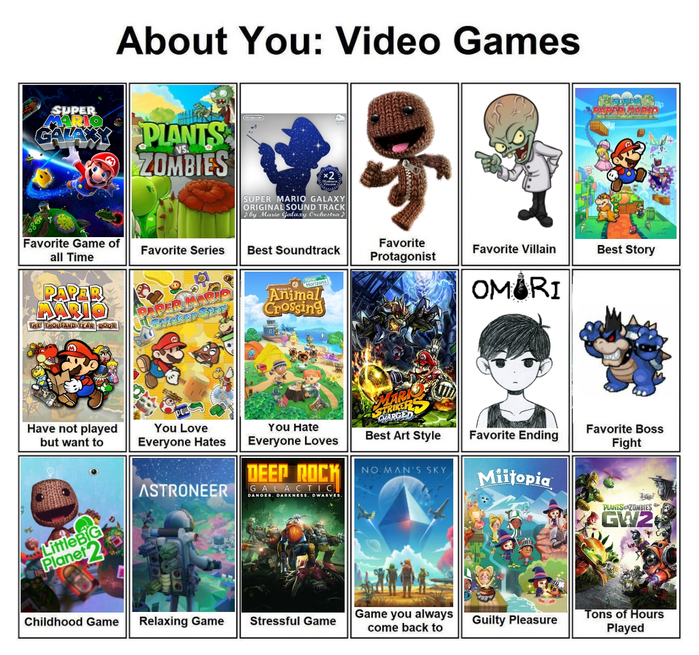

My favorite game is Super Mario Galaxy for the Nintendo Wii.

"Old School?"
Well, yeah, but it's the game that well- got me into games, really.
As far as masterpieces go, I have never seen a 3D platformer ever top this one.
I don't really think there's ever been anything that came as close, to be honest.
I suppose an honorable mention will go to Plants vs. Zombies: Garden Warfare 2 if I had to (for shooters anyway), but honestly- my top 10 changes all the time.
No, really. It's a constantly changing mess. that being said, incase you're curious heres a chart I put together recently (it's not 100% accurate but it's close)

Go Back